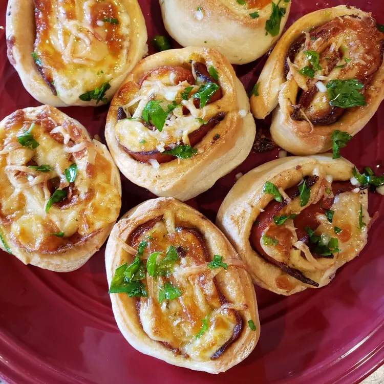

Somewhere between a pizza slice and a garlic knot, these pizza rolls make for a great appetizer! Make it your own by swapping in your favorite pizza toppings. Serve with warmed marinara or more pizza sauce for dipping!
Preheat the oven to 350 degrees F (175 degrees C). Spray two cake pans with nonstick cooking spray.
Roll out pizza dough on a lightly floured cutting board. Flatten out into a rectangle.
Brush surface of the pizza dough with as much pizza sauce as you like.
Cover dough with alternating slices of large pepperoni and mozzarella slices. Dot with small pepperoni slices.
Starting at the long side, roll up the dough carefully into a jelly roll, making sure the filling stays in and pinch closed along the side. Slice into 1/2-inch rounds and place them inside the cake pans flat. Tuck the ends around as necessary and sprinkle Parmesan cheese over each slice.
Bake in the preheated oven until golden brown, 15 to 20 minutes.
Stir together olive oil, parsley, and garlic in a shallow bowl. Brush warm pizza rolls with garlic oil.